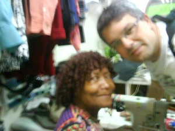

vamo, vamo, vamo…
Claudião
Advogado que mora em Pirituba City - São Paulo - SP
Home page: http://www.dundes.com/wiki/Claudio/HomePage
Posts by Claudião
PTT – Pirituba Trote Tour
78 years
by Claudião
in Ex-sedentário
No frescor da madrugada, avançando pela manhã. Sem relógio, só curtindo o meu bairro, com as pernas e pulmões.
Delícia de treino. Não andei em nenhuma subida.
http://www.mapmyrun.com/route/br/s%e3o%20paulo/331127176717820848
Antes de sair de casa, liguei a TV para ver a hora. Eram 05:12. Quando entrei de volta em casa, liguei-a novamente e eram 06:57. Ótimo. Como é gostoso curtir e se orgulhar de um treino.
Vinte quilômetros – adendo
108 years
by Claudião
in Ex-sedentário
Fiquei mesmo devendo um post mais destalhado. Senti que tinha de postar, mas o fiz num daqueles segundos em que a gente se sente a última bolacha do pacote. Passou, todo mundo tem estes instantes, e fui postar justo num destes. Besteira.
Se eu fosse discorrer naquela hora, seria um desastre, porque só ficaria em evidência a frustração de um treino que não teve o desfecho planejado. Só o desfecho foi frustante. O início e o meio foram perfeitos. Instante de frustração que passa e a gente reflete sobre as coisas boas. Interessante que o Fábio falou sobre isso hoje, no arquivo de corridas, respondendo à Dani.
O Treino foi bom. E como ressaltado nos comentários. Em percurso de responsa.
No sábado eu tive um desarranjo. Por sinal, horrível, mas fiz uma oração na noite de sábado e acordei no domingo sem relógio nenhum tocando. Que delícia. Até a hora de dormir ainda não tinha respondido à Mari sobre onde eu iria treinar. Eu não tinha decidido. No meu íntimo tinha dúvidas se iria mesmo treinar.
Eu fiz o percurso carregando suprimento para quatro horas de treino. Comprei mais um cinto de hidratação. Agora são três para completar minha fantasia de Lento Forte (e autosuficiente). Carreguei três garrafas e nem cheguei a usas duas totalmente. Além de cinco sachês de gel (só usei três), celular, chaves, docs. e din din. Gosto de saber que poderei treinar forte, um dia, sem depender de estrutura nenhuma. E nos 25km, como vou passear e curtir quero aproveitar que já faço força, para levar máquina fotográfica, caderninho de autógrafo (brincadeira, não chega a tanto) e o que mais me der na telha.
Parti da Mutinga bem lento, curtindo as costas livres mas preocupado se haveria nenhum contratempo intestinal. Não houve. Pelo celular achei que iria monitorar o tempo, mas não dei conta. Perdi a conta. Só me lembro que com uma hora e meia de treino eu estava passando por cima da Bandeirantes. Segui adiante pelo rodoanel mais um tanto, para poder pegar Bandeirantes na contramão certa (contramão certa é ótima, né, mas quem corre sabe do que estou falando).
Voltando pela Bandeirantes, peguei o vento contra, o que amenizou muito o calor, mas quero acreditar também que tenha me exigido mais força Quero acreditar, não sei se isso aconteceu realmente,talvez sim, talvez não.
Das últimas vezes que corri na Bandeirante me deu desânimo sempre que atingia dois quilômetros do ponto final (ponte da Mutinga por sobre a Bandeirantes (uns 200 metros antes da placa de 17km- na contramão). Não senti este desânimo ontem, mas porque eu não me dei conta de que estava chegando, avistei a ponte, mas achava que era a ponte anterior. O que me fez subir pelo km 18 numa boa, quando vi que era ponte de chegada mesmo, parei. Simplesmente parei. Não estava cansado, tinha forças, mas parei, só porque vi a ponte. Senti-me um cretino caminhando aqueles quatrocentros metros sem nenhuma razão para aquilo. Pelo mapa ainda faltava mais de um trecho até a ponte e a mutinga mais 1km, mas o percurso eu desenhei há algum tempo, acabei correndo um percurso maior que o desenhado no mapa, exatamente no rodoanel, para manter-me na contramão. Aquela cretinice, na hora, fez-me temer os 25km. Fiquei imaginando eu parando no km 22 só porque não treinei mais do que isso antes, coisa e tal. Uma besteira. Eu sei. Mas senti isso. Estou longe de desanimar. Muito pelo contrário. Estou sonhando altíssimo, nem imaginam. Mas fato é que naquela hora eu fiquei muito frustrado com aquela parada besta. Posso considerar como desperdiçado terceiro sachê de gel que tomei.
O treino foi ótimo. Exigiu-me força e perseverança. Seguir na trilha molhada na subida/curva perigosa do km 19 da Anhanguera; pular mureta; escalar de quatro o viaduto de acesso à contramão do rodoanel. Tudo isto foi ótimo e estimulante treino. Meu corpo aguenta os 25km. Só me resta curtir. E farei isto. Obrigado ao Thiago e a todos, por exigirem que fizesse este relato e desabafo. Estou leve.
Eu amo tudo isto. E mesmo com curso, trabalho e estresse eu vou ser feliz em tudo que eu tiver direito sobre as pernas em movimento. E tenho dito.
$$$$ $$$$ $$$$$
No meu anel viário particular. Se olhar no link, verá que na avenida perto de casa, parti pela esquerda e voltei pela direita. Foi a volta completa casa/anhanguera/rodoanel/bandeirantes/casa. Foi a primeira vez que saí 08:00 para treinar. O percurso é bom, mas não em quaquer dia e hora.
http://www.mapmyrun.com/route/br/s%e3o%20paulo/676127068755832825
A dieta vai de mal a pior, preciso de mais regularidade no treino.
Lento Gordo Forte – LGF 001
128 years
by Claudião
in Ex-sedentário
Este post eu dedico a minha amada esposa, que está me dando uma força incrível neste momento e me propocionando a chance de fechar um ciclo.
Dedico também este post ao Thiago, segura este coração, meu amigo, e ao Fábio Namiuti, que embora não tenha culpa nenhuma de minhas insanidades, e de quem mais me lembro com certo orgulho nos meus treinos sem juízo.
Como comentei no blog eu engordei nos últimos 7 dias. Não importa, os treinos de terça e de quinta são a prova de que os quilos a mais até ajudaram na corrida, só tenho de me cuidar para que isso não afete demais meu psicológico. Seria fatal.
Na terça-feira, enfrentei subidas rotineiras com um afinco inédito. Foram gostosas de subir e senti que tinha força para me impulsionar. Seis km em 47 minutos, mais exercícios de força. Já consigo executar duas séries de abdominais. Palmas para mim!!!!
Quarta-feira a noite eu tive uma crise do meu distúrbio alimentar. Mas na quinta-feira acordei bem e só não corri, porque ainda passava mal com tudo que tinha comido na noite anterior. Por isso, enfiei a tralha na mochila já pensando num treino sem juízo.
Como na quina-feira santa, transformei-me em Lento Forte, desta vez, Lento Gordo Forte, na loja de reparos da Benê, grande amiga e incentivadora. Fotografei como isto acontece.
Assim que saí da loja da Benê foi que eu senti o peso absurdo da mochila, acredito agora que só não estou de cama, porque os quilos extras me deram suporte.
Segui num trote lentíssimo, mas muito bom, considerando o saculejo desajeitado nas costas (preciso comprar uma mochila igual a da Mari). Abaixo tem um link do percurso. Segui passeando e desligado que eu sou até me perdi do caminho e corri 200 metros na Marginal Tietê (ai de mim se a Mari ler isso).
Voltando um pouco, mudei de caminho, quando cheguei na Estação Sumaré do Metrô eu me enveredei pela Sumaré, quando já estava cercado de Palmeirenses que me dei conta de trajava preto e branco e piscava na minha testa um letreiro enorme: “Sou corinthiano, mas não batam em mim, por favor! Mas eles nem perceberam minha presença. Isto é sacanagem. Eu lá, sentindo-me o máximo e ninguém reparou. Triste demais.
Depois de passado o Viaduto Antártica o plano era seguir pela Marquês de São Vicente até a Ponte do Piqueri, mas preocupado com as costas e com a mochila cujas as alças vão se afrouxando conforme o saculejo nem vi como fui parar na Marginal Tietê, segui pela calçada até encontrar um rua qualquer que saísse dela. Foram ums 200 metros que não acabavam mais.
Dei uma paradinha rápida na Marquês para ajustar as alças da mochila e seguir no meu trote. Senti um pouco de medo de passar rente a favela que tem na altura da linha do trem, no Piqueri, mas segui determinado e fui novamente ignorado. Não dou mais cartaz mesmo. Logo depois eu paro de trotar e sigo caminhando pela Raimundo Pereira de Magalhães até casa da Vó do Henrique, onde ele me esperava com um delicioso abraço no paizão melado de suor.
Ponto negativo do treino: Pilei concreto por 14kms. Foi trotinho, foi lento, mas não façam isto pelo amor de Deus. O treino foi sem juízo, sou fascinado pela adrenalina que isso causa, mas é um perigo, reconheço.
Ponto positivo: Estou com a confiança a 1000. Agora eu até conto com este peso extra para me divertir nos 25km da Maratona. Dez dias atrás eu não teria suportado o saculejo da mochila pesada. Não estou aqui fazendo apologia a gordura, mas ela até que me ajudou.
Link para o percurso.
http://www.mapmyrun.com/route/br/s%e3o%20paulo/111127141553966695


Obrigado Benê, você é demais minha amiga.
Tem semana que é assim
68 years
by Claudião
in Ex-sedentário
Assim, sem treino, mas muita, muita correria e pouquíssimas horas de sono.
Assim foi a minha semana, sem corrida e sem ver direito sequer a família. O problema maior que é que se fico mais de dois dias sem correr me torno “boca nervosa” (como diz o Fábio Namiuti). Se passar de três dias, então, torno-me boca histérica.
Minha última corrida foi sábado.
Nota de bastidor: Ontem a tarde eu tinha um prazo para cumprir (não era fatal, mas convinha cumpri-lo na data prevista), por sorte era muito próximo (até por isso acabei me demorando mais). Saí do escritório faltando 7 minutos para fechar o protocolo. Um ano atrás eu teria perdido o prazo (mesmo sendo perto) devido a impossibilidade de trotar e aos faróis (Em Regente, falamos SINALEIRIO). Ontem não, EU VOEI. Dentro destes sete minutos não só protocolei o documento como cheguei de volta no escritório faltando 30 segundos para as 19:00 horas. Isso contando o tempo que a recepcionista do prédio demorou para digitar o número do meu RG. Isto é o máximo. Adrenalina pura, tanto pelo sprint como pelo medo de imprevisto. Se caio ou tropeço, por exemplo, já era. Isso causou uma descarga de adrenalina no sangue que me deixou, sei lá, com vontade de mais. Mas só foi bom porque que deu certo, lógico.
Levantei hoje as 04:00 horas. Voltei para a cama, porque não tinha condições físicas sequer para caminhar. Mais uma oportunidade eu deixei passar, quando vim de carona da casa da sogra. A garoa e o desânimo me fizeram entrar no carro do sogro, que ia até o meu destino. Voltar da sogra correndo seriam três quilômetros (dos bons). Não aproveitei. Mas antes do banho fiz exercícios (agachamanto, flexões e abdominais) e fiquei alucinado de vontade de correr, eu estava pronto para 10km de Pirituba. Mas mal dava tempo de um banho demorado, eu tinha de vir para o trabalho. Ficou para a próxima. Será que eu posso fazer um longuinho no domingo?
Pronto, desabafei.
Amenidades agora.
Estou ansioso para que chegue amanhã, será a estréia dos nossos filhos em corrida: os filhos do Alecão, Olivia e Maurício, e o Henrique. Estou com fé de que a visão das crianças correndo faça o Alekão retomar as forças que ele tinha até o final do ano passado. Vou rezar para que isso aconteça!
Mas você não prometeu para a CORPORE que não participaria de evento dela este ano. Como vai levar o seu filho???
Realmente, só me resta aquela respostinha sem vergonha de que eu prometi que apenas eu não correria, e não o meu filho.
Contradição a parte, esta promessa que eu fiz a CORPORE eu cumprirei, mas com alguma dor. É a única empresa que organiza uma corrida longa em São Bernardo. Cidade especial e querida, terei de correr lá sem evento mesmo. Contarei com a ajuda do Alecão e Samuel, mas este ano eu corro 21 km lá, mesmo sem a CORPORE. Porque uma de duas: ou a CORPORE revê os valores ou, como o Fabão, só correrei em evento dela QUANDO FICAR RICO.
Quem quer correr em São Bernardo bote o dedo aqui… que já vai fechar…
Sigo firme
68 years
by Claudião
in Ex-sedentário
Domingo (28.03): – preguiça
Segunda: preguiça e meia
Terça: 1/2 hora de trote
Quarta: Quarenta minutos em percurso com ladeira.
Quinta-feira: Trouxe para o escritório mochila com as tralhas de corredor. Como deixei para comprar o ovo de páscoa da minha amada no último dia, advinhem? Não tinha o ovo que procurava na primeira loja (cacau show), nem na segunda que liguei, nem nas cinco seguintes. Tive muita sorte de ter o último justo no caminho de casa (Shooping da Lapa). Pedi para rescervá-lo que iria correndo. E fui mesmo. Como tinha reunião no escritório saí sem saber onde eu me transformaria, mas como a sorte estava comigo uma loja de reparo em roupas estava aberta. E minha amiga Benê me deixou trocar no provador. Saí de lá agradecendo e desembestado pela Paulista repleta de gente. Foi um treino excelente o qual eu não recomendo para ninguém. Fui do Parque Trianon até a Lapa (Paulista/Dr. Arnaldo/Heitor/Aurélia). 7km de muita porrada nas articulações, e como eu estava receoso de que não guardariam o ovo por muito tempo eu acelerei o quanto pude em todas as descidas. Insano! Foi um excelente treino de ritmo, mas não repitam isso que eu fiz. Na sexta-feira eu estava disposto a fazer uma corridinha mas o bom senso me lembrava do impacto do dia anterior.
Sexta: Vinho, bacalhau e mais vinho.
Sábado: TLT 001
TLT significa Treino Longo Traia. Traia é um adjetivo tirado do dicionário Dundes, que serve para designar as qualidades com um grau tamanho de exagero, que superlativo nenhum seria capaz.
Três horas e quarenta minutos eu me levanto e saio às 04:10 de casa já travestido de Lento Forte. Tomo um ônibus as 04:30 horas e às 04:55 salto já trotando pela Avenida Gastão Vidigal em Frente ao CEASA/CEAGESP. Está garoando forte e sigo na minha lerdeza de sempre, já que o plano era trotar levemente para que eu chegasse no ponto de encontro do treino as 06:00 na frente da Psicologia na USP. Este percurso da minha primeira hora de trote tinha 7km, ainda cheguei faltando 10min para o combinado o que me permitiu ficar indo e voltando uns 100 metros para ver quem estava treinando. E continuva garoando. Chegou o Thiago, depois o Paulo, ainda beberiquei uma água do Thiago para economizar a minha (que coisa feia) e partirmos, eu já estava aquecido, mas lento. Muito lento. Percorremo a primeira volta d 8km do treino do Thiago e do Paulo e juntaram-se a nós uns amigos do Paulo, uma turminha da pesada. De nomes só me lembro de Alexei (ultra) e da Edy (maratons maniacs). Devido ao feriado e ao tempo feio se via que só haviam maratonistas na USP. Depois de uns três quilômetros junto desta turma eu fiquei para traz, mas não muito e tive a idéia de cortar algumas voltas para nunca perdê-los da mira, imaginado sempre eles me ultrapassando e eu retomando posição devido aos cortes de caminho, mas algo saiu do planejado eu estava mais lento, mas não muito porque fiz dois cortes no caminho e nada deles me alcaçarem, pensei até em voltar trotando para reencontrá-los mas tive medo de quebrar ao tentar acompanhá-los e segui no meu treininho que seria de três horas. Ao chegar na psicologia pela segunda vez, graças aos atalhos eu voltei para encontrá-los, os ultra heróis da resistência cujo treino só tinham passados as duas horinhas de aquecimento. A brincadeira começaria naquela hora em que já terminava o meu treino. Mas terminei feliz e muito satisfeito. Com direito a fazer os últimos segundo com os braços levantados. E enfatizando o recorde mundial pessoal. E num berro estridente um abençoado VALEU!!!!
E valeu. Como valeu! Três horas de treino cujo esforço mesmo foi o dos pés, queixando-se do encharcamento por três horas. Isto me incomodou bastante, mas valeu porque não teria graça se tivesse sido muito fácil treinar naquela manha fresca e permeada por garoas. Para o próximo treino com o tempo assim usarei as dicas do Paulo (óleo de amêndoa ou vazelina sólida, ou os dois dependendo do caso).
O treino muito bom e não importa a distância percorrida. Será minha preocupação a partir do momento em que atingir 03h30m de trote contínuo. Será no próximo sábado? Quem sabe…
Estou curioso para ler o relato do Thiago e as impressões dele a respeito da distância e da companhia dos ultras. Diga tudo, Thiago. Nãos nos esconda nada.
Sono perfeito, pra sempre!!!!!!
118 years
by Claudião
in Ex-sedentário
Para quem não recebe meus e-mails particulares. Desde a criação deste blog eu usava a assinatura de e-mail com a frase “Em busca do sono perfeito” logo acima do link para o blog.
Em dezembro eu mudei a assinatura para “Sono perfeito, pra sempre!”
É exatamente isso que eu quero para a minha vida. Ter o sono perfeito, que graças a este blog eu estou tendo desde dezembro, para sempre. É isto que eu quero. É isto que eu mereço. E é isto que eu almejo conseguir com a ajuda de vocês, deste blog, que se tornou vital para mim.
Eu digo isso porque estou num momento crucial da minha vida. Minha meta inicial era voltar a dormir como qualquer pessoa normal. Eu consegui. Mais do que isso, consegui emagrecer 30 quilos.
É a terceira vez que eu emagreço 30 quilos. E em cada uma das recaídas que eu tive, eu engordei cada vez mais. E piorei cada vez mais minha saúde. A primeira vez foi em 2002, estava eu com 107 e mantive-me com 77 quilos por quase um ano. A primeira recaída fez com que eu chegasse nos 116 quilos. Trinta a menos e eu estava correndo com 86 quilos. A segunda recaída como já disse por aqui, fez-me chegar nos incríveis 129 quilos e uma apinéia mortal que fez até ter uma amnésia de 8 horas consecutivas.
Hoje eu estou dormindo bem e pesando outros 30 quilos menos. Também faz sete meses que eu estou conseguindo correr. Sete meses de corrida. Este número me causa tremores internos, porque quando recaí em 2003 eu tinha sete meses de corrida. Em 2007, idem.
Eu não quero ter uma nova recaída só porque atingi sete meses de corrida. Eu quero continuar, eu quero mudar a minha história de vida. Eu quero correr mais sete meses, depois mais sete anos e fazer isto por toda a minha vida.
Agora é a hora da minha verdade. Agora é a hora de trilhar um caminho novo. Um caminho árduo e cruel. Já sinto o meu organismo lutando para reconquistar o peso. Já sinto, às vezes, aquela angústia que desemboca em compulsão alimentar. Eu quero fazer dos erros, acertos e dentro desta meta. Está a minha promessa de que nunca mais usarei a corrida para me autoflagelar após uma compulsão. Eu quero correr com prazer, não para aliviar qualquer culpa. Eu terei minhas compulsões. O que eu quero com a ajuda de Deus é me perdoar quando isto acontecer e sair para correr para glorificar este perdão e curtir cada passada.
O treino de sábado me deixou muito feliz. Fugiu ao planejado mas me deu prazer. Não fiquei frustrado porque não corri o longo para o qual eu vinha me preparando física e emocionalmente a semana toda. Muito pelo contrário. O planejamento pode ter ido pelo ralo. Mas a corrida não. Ela aconteceu de forma divina e me proporcionou satisfação e euforia. É isto que eu quero para a minha vida. Prazer e alegria com a corrida. O dia em que eu corro bem, fico tão feliz que consigo me comportar bem à mesa. As compulsões alimentares fazem parte da minha vida. Eu terei de ser feliz mesmo com elas. Toda vez que tentei vencê-las fui vencido. Não brigarei com elas. Um dia de cada vez com ou sem compulsão quero vir aqui e dizer que corri. Dizer que fui feliz correndo. E dizer isso muitas e muitas vezes, por muito tempo. Eu estou com medo. Mas também estou confiante de seguir enfrentando tudo isto. Eu só consegui esta terceira guinada na minha vida porque sou um otimista incorrigível que ama a vida. Mas que quer uma nova vida, que começa a partir de agora. Mantendo o peso, mantendo a motivação, sendo feliz e perseverante e daqui dez anos poder dizer que venci, de verdade. Agora eu não venci nada. Subi um degrau e há centenas de milhares na minha frente. Um por vez. Um após o outro eu subirei.
Tudo errado, mas tudo ótimo.
68 years
by Claudião
in Ex-sedentário
Desculpem-me pela demora em postar o nosso treino de sábado. Antes tarde do que nunca.
Preparei-me para o longão de sábado a semana toda. No dia D. Tudo errado. Tudo errado, MAS TUDO ÓTIMO.
Marcamos, Thiago, Paulo e eu, às 06:00 horas na USP. Cinco e trinta e oito lá estava o Claudião se preparando para o longão. Não demorou muito e chegou o Thiago. O Paulo já chega pronto, só faltou sair correndo do carro. Partimos nós e depois de uns três quilômetros percebi que meus companheiro estavam num ritmo muito forte para mim. Estávamos a menos de 7m/km. Isto para mim é um sprint de final de prova. Mas como eu não estava exatamente passando mal resolvi seguir no passo dos heróis da resistência.
Resumo da ópera. O treino que estava planejado para ser de 24km, não chegou a 16km. Em compensação foi um excelente treino de ritmo. O Claudião acompanhou os bravos por mais de 10km num ritmo de 06:40/km. Isto fói ótimo. Senti um grande desconforto causado pelos cintos com as garrafas. Além de apertados, havia um espaço entre os dois que formou um travesseirinho de banha. Num determinado momento aquilo começou a doer como se fosse uma diarréia na porta. Não era. Foi eu afrouxar os cintos e o desconforto passou de imediato, ainda caminhei satisfeito até a linha de partida, onde peguei o carro agradeci os implacáveis Thiago e Paulo que ainda estavam a um tantão de treino pela frente.
Terei tempo de fazer muitos longos. Adorei ter podido acelerar um pouco a minha lentidão morbida. Caminhando e correndo e seguindo a canção. Somos todos iguais sendo lerdos ou não. Caminhando e correndo em treino curto e longão… Vem vamos embora que esperar não é correr… Quem corre o faz agora não espera adoecer. Vem vamos embora…. Ops! Empolguei-me. Ah, dane-se o blog é nosso mesmo.
Os meus mais SINCEROS parabéns ao Namiuti
48 years
by Claudião
in Ex-sedentário
Ele é um cara comum. Pai do Dudu, marido da Janete e rala como todos nós para dar conforto aos seus. Toda pessoa dotada destas características ditas comuns merece muitos parabéns e muito elogio, por serem pessoas verdadeiramente especiais.
Mas o Fábio é um corredor amador. Mas expressão amador aqui está muito além da acepção que designa rubrica esportiva (aquele que pratica esporte sem interesse pecuniário). O Fábio Namiut é corredor amador com o sentido formal da expressão, justamente porque tem amor à corrida, porque é amante, apreciador e ENTUSIASTA, porque pratica com gosto e não mede esforço nem tempo para gritar isso ao mundo.
O Fábio é incansável no apoio a quem quer que seja. Incentivando, empurrando, sempre mais um pouquinho. Carregando nas costas a empolgação de toda uma equipe que se mantém firme e feliz, que é a dos malucos do alsfato, um bando de sem juízo quem tem o Fábio por estompim e combústivel que os move sempre pra frente e felizes. Até com os bolos de milho que ainda hei de comer um pedaço.
Um amador que grita esse amor sem pudor, sem amarras e sem qualquer tipo de preconceito. O que consegue fazer de uma corrida sem medalha, uma prova de emoção tal e qual a maior do mundo.
Fica aqui os meus sinceros parabéns e o agradecimento em nome de todos que gostam de correr. Você é o nosso porta-voz, Fabio Namiuti. Muito obrigado.
Vão bem!
48 years
by Claudião
in Ex-sedentário
Segunda e terça-feira deixei o estress tomar conta da situação. Mas não vou chorar por isso. Os treinos considero que vão bem.
Ontem, eu acordei querendo errar, compensando a falta de treino, mas caí em mim a tempo de corrigir a burrada. Voltei para a cama, o que foi ótimo. O trote de 30 minutos na manhã da quarta-feira foi muito gostoso para o corpo e muito melhor ainda para a mente. Penso que por ter sido tão bom que cheguei tarde da PUC com o corpo pedindo movimento. Pediu e eu dei. Foram quarenta minutos que me fizeram muito bem. Adordei hoje mais tarde (eu pude) e fiz minha segunda sessão de abdominais. Eu as odeio, mas agora que assumi o meu verdadeiro eu corredor: Lento Forte, os longos lentos pedem um reforço na região (então vamos fazer né…). Fiz também três séries de flexão de braço (ah, isso é uma delícia). Na 1ª série eu executei 15 repetições; na 2ª, 20; e na 3ª, 30. Por que um exercício é gostoso de fazer e outro uma tortura?
Sábado estarei na USP, só com a fantasia de LENTO FORTE. A de Polenta Azeda eu joguei fora. Não me serve mais (está larga rs)
“Eu” tinha razão
68 years
by Claudião
in Ex-sedentário
Eu mesmo levantei da cama ás 03:56. Sentei no sofá e morri por 10 minutos. Minha idéia seria rodar bem levinho das 04:30 às 05:30. Depois, ir com a Mari levar o Henrique na Vó dele e mais trotinho de volta até em casa, mais 30 minutos. Isto tudo era o que “Eu mesmo” queria. Mas “Eu” me disse que seria melhor voltar para cama e domir até que desse a hora de levar o Henrique, que meia hora estaria de bom tamanho, considerando que terá palestra atés as 23:00 horas, sem falar que “Eu mesmo” tinha ido dormir a 01:30 horas.
“Eu” tinha razão. “Eu mesmo” estava morto e talvez nem conseguiria o meu primeiro trote, que dirá o segundo. Voltar para a cama e dormir por mais uma hora foi mágico. Acordei inteiro e disposto. E o trote de 30 minutos foi muito gostoso.
.jpg "DSC01782 (576x1024)")


.jpg "IMG_7302 (768x1024)")
.jpg "IMG_7314 (1024x768)")


{kind=link}
{kind=link}
Últimos comentários